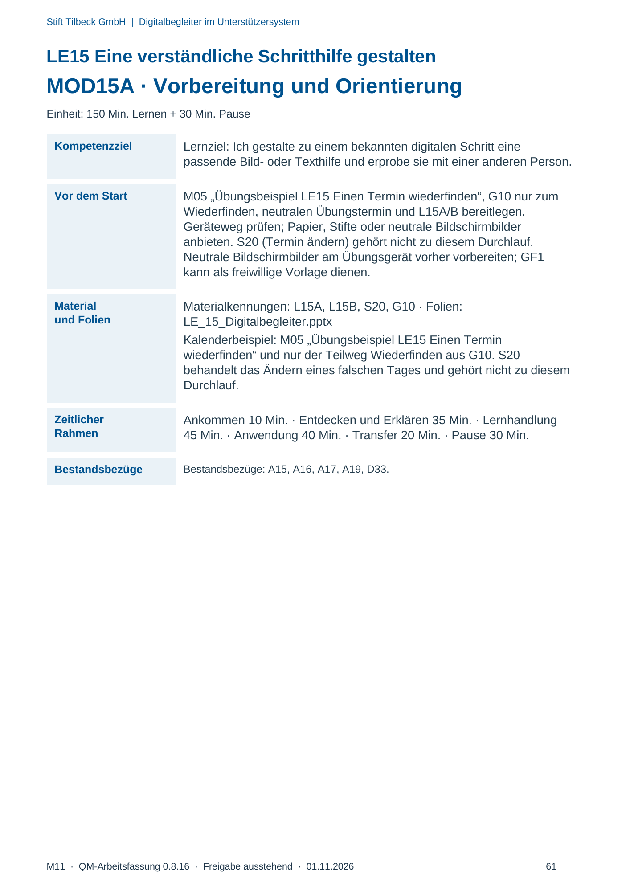
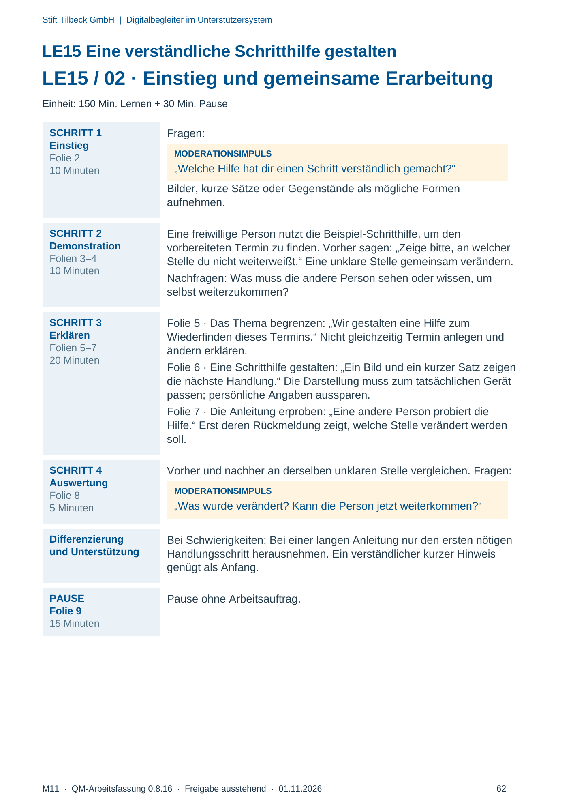
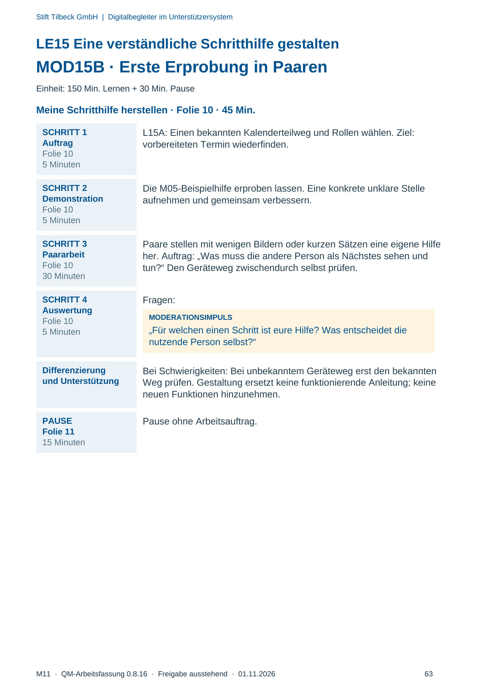
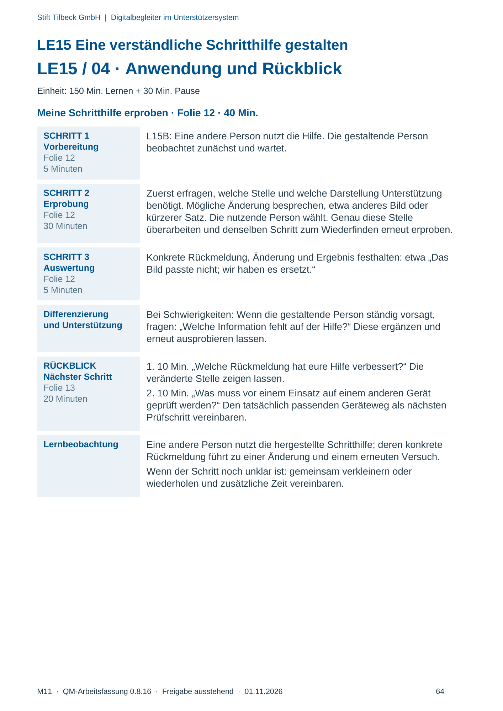

M11 · Originalseite 61, 62, 63, 64
Durchführungshilfe
Gezielte Original-Druckauswahl.
Fragen und Ankreuzfelder werden auf dem Ausdruck bearbeitet. Die Lesefassung speichert keine Antworten.
Lesefassung · Seite 61
Stift Tilbeck GmbH | Digitalbegleiter im Unterstützersystem
LE15 Eine verständliche Schritthilfe gestalten
MOD15A · Vorbereitung und Orientierung
Einheit: 150 Min. Lernen + 30 Min. Pause
Kompetenzziel Lernziel: Ich gestalte zu einem bekannten digitalen Schritt eine
passende Bild- oder Texthilfe und erprobe sie mit einer anderen Person.
Vor dem Start M05 „Übungsbeispiel LE15 Einen Termin wiederfinden“, G10 nur zum
Wiederfinden, neutralen Übungstermin und L15A/B bereitlegen.
Geräteweg prüfen; Papier, Stifte oder neutrale Bildschirmbilder
anbieten. S20 (Termin ändern) gehört nicht zu diesem Durchlauf.
Neutrale Bildschirmbilder am Übungsgerät vorher vorbereiten; GF1
kann als freiwillige Vorlage dienen.
Material
und Folien
Materialkennungen: L15A, L15B, S20, G10 · Folien:
LE_15_Digitalbegleiter.pptx
Kalenderbeispiel: M05 „Übungsbeispiel LE15 Einen Termin
wiederfinden“ und nur der Teilweg Wiederfinden aus G10. S20
behandelt das Ändern eines falschen Tages und gehört nicht zu diesem
Durchlauf.
Zeitlicher
Rahmen
Ankommen 10 Min. · Entdecken und Erklären 35 Min. · Lernhandlung
45 Min. · Anwendung 40 Min. · Transfer 20 Min. · Pause 30 Min.
Bestandsbezüge Bestandsbezüge: A15, A16, A17, A19, D33.
Originalseite ansehen

Lesefassung · Seite 62
Stift Tilbeck GmbH | Digitalbegleiter im Unterstützersystem
LE15 Eine verständliche Schritthilfe gestalten
LE15 / 02 · Einstieg und gemeinsame Erarbeitung
Einheit: 150 Min. Lernen + 30 Min. Pause
SCHRITT 1
Einstieg
Folie 2
10 Minuten
Fragen:
MODERATIONSIMPULS
„Welche Hilfe hat dir einen Schritt verständlich gemacht?“
Bilder, kurze Sätze oder Gegenstände als mögliche Formen
aufnehmen.
SCHRITT 2
Demonstration
Folien 3–4
10 Minuten
Eine freiwillige Person nutzt die Beispiel-Schritthilfe, um den
vorbereiteten Termin zu finden. Vorher sagen: „Zeige bitte, an welcher
Stelle du nicht weiterweißt.“ Eine unklare Stelle gemeinsam verändern.
Nachfragen: Was muss die andere Person sehen oder wissen, um
selbst weiterzukommen?
SCHRITT 3
Erklären
Folien 5–7
20 Minuten
Folie 5 · Das Thema begrenzen: „Wir gestalten eine Hilfe zum
Wiederfinden dieses Termins.“ Nicht gleichzeitig Termin anlegen und
ändern erklären.
Folie 6 · Eine Schritthilfe gestalten: „Ein Bild und ein kurzer Satz zeigen
die nächste Handlung.“ Die Darstellung muss zum tatsächlichen Gerät
passen; persönliche Angaben aussparen.
Folie 7 · Die Anleitung erproben: „Eine andere Person probiert die
Hilfe.“ Erst deren Rückmeldung zeigt, welche Stelle verändert werden
soll.
SCHRITT 4
Auswertung
Folie 8
5 Minuten
Vorher und nachher an derselben unklaren Stelle vergleichen. Fragen:
MODERATIONSIMPULS
„Was wurde verändert? Kann die Person jetzt weiterkommen?“
Differenzierung
und Unterstützung
Bei Schwierigkeiten: Bei einer langen Anleitung nur den ersten nötigen
Handlungsschritt herausnehmen. Ein verständlicher kurzer Hinweis
genügt als Anfang.
PAUSE
Folie 9
15 Minuten
Pause ohne Arbeitsauftrag.
Originalseite ansehen

Lesefassung · Seite 63
Stift Tilbeck GmbH | Digitalbegleiter im Unterstützersystem
LE15 Eine verständliche Schritthilfe gestalten
MOD15B · Erste Erprobung in Paaren
Einheit: 150 Min. Lernen + 30 Min. Pause
Meine Schritthilfe herstellen · Folie 10 · 45 Min.
SCHRITT 1
Auftrag
Folie 10
5 Minuten
L15A: Einen bekannten Kalenderteilweg und Rollen wählen. Ziel:
vorbereiteten Termin wiederfinden.
SCHRITT 2
Demonstration
Folie 10
5 Minuten
Die M05-Beispielhilfe erproben lassen. Eine konkrete unklare Stelle
aufnehmen und gemeinsam verbessern.
SCHRITT 3
Paararbeit
Folie 10
30 Minuten
Paare stellen mit wenigen Bildern oder kurzen Sätzen eine eigene Hilfe
her. Auftrag: „Was muss die andere Person als Nächstes sehen und
tun?“ Den Geräteweg zwischendurch selbst prüfen.
SCHRITT 4
Auswertung
Folie 10
5 Minuten
Fragen:
MODERATIONSIMPULS
„Für welchen einen Schritt ist eure Hilfe? Was entscheidet die
nutzende Person selbst?“
Differenzierung
und Unterstützung
Bei Schwierigkeiten: Bei unbekanntem Geräteweg erst den bekannten
Weg prüfen. Gestaltung ersetzt keine funktionierende Anleitung; keine
neuen Funktionen hinzunehmen.
PAUSE
Folie 11
15 Minuten
Pause ohne Arbeitsauftrag.
Originalseite ansehen

Lesefassung · Seite 64
Stift Tilbeck GmbH | Digitalbegleiter im Unterstützersystem
LE15 Eine verständliche Schritthilfe gestalten
LE15 / 04 · Anwendung und Rückblick
Einheit: 150 Min. Lernen + 30 Min. Pause
Meine Schritthilfe erproben · Folie 12 · 40 Min.
SCHRITT 1
Vorbereitung
Folie 12
5 Minuten
L15B: Eine andere Person nutzt die Hilfe. Die gestaltende Person
beobachtet zunächst und wartet.
SCHRITT 2
Erprobung
Folie 12
30 Minuten
Zuerst erfragen, welche Stelle und welche Darstellung Unterstützung
benötigt. Mögliche Änderung besprechen, etwa anderes Bild oder
kürzerer Satz. Die nutzende Person wählt. Genau diese Stelle
überarbeiten und denselben Schritt zum Wiederfinden erneut erproben.
SCHRITT 3
Auswertung
Folie 12
5 Minuten
Konkrete Rückmeldung, Änderung und Ergebnis festhalten: etwa „Das
Bild passte nicht; wir haben es ersetzt.“
Differenzierung
und Unterstützung
Bei Schwierigkeiten: Wenn die gestaltende Person ständig vorsagt,
fragen: „Welche Information fehlt auf der Hilfe?“ Diese ergänzen und
erneut ausprobieren lassen.
RÜCKBLICK
Nächster Schritt
Folie 13
20 Minuten
1. 10 Min. „Welche Rückmeldung hat eure Hilfe verbessert?“ Die
veränderte Stelle zeigen lassen.
2. 10 Min. „Was muss vor einem Einsatz auf einem anderen Gerät
geprüft werden?“ Den tatsächlich passenden Geräteweg als nächsten
Prüfschritt vereinbaren.
Lernbeobachtung Eine andere Person nutzt die hergestellte Schritthilfe; deren konkrete
Rückmeldung führt zu einer Änderung und einem erneuten Versuch.
Wenn der Schritt noch unklar ist: gemeinsam verkleinern oder
wiederholen und zusätzliche Zeit vereinbaren.
Originalseite ansehen
